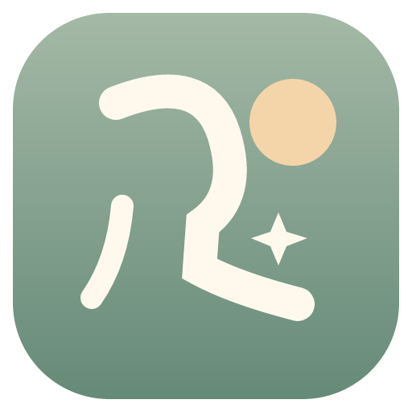

第二阶段 · 素材生产
第二阶段 · 素材生产
拖动旋转、滚轮缩放；此处直接加载交付的 GLB 文件。
高塔是六个独立积木节点，支持运行时倾角驱动；“播放倾倒”读取 GLB 内的物理烘焙动画。
沿用已确认的鼠尾草绿与暖色图形，无内嵌中英文名称；首次 debug APK 使用此图标。

已提供 SVG、7 档 PNG、透明前景、背景与 Android 图形资源源文件。
按钮文字、问卷选项、角度与计时由原生 UI 独立绘制；图形素材保留透明背景。
用于核对素材组合与中英文文案；整页参考图不替代可操作的原生界面。
新版专业男声音色已确认，全部中英文引导已替换。原音色停用。
轻木质点击、自然木块碰撞和柔亮短音；应用音量跟随系统。
原生 SDK 导入、空间容器、IMU、性能和 APK 图标封装将在素材确认后的第三阶段验证。
下载完整素材包